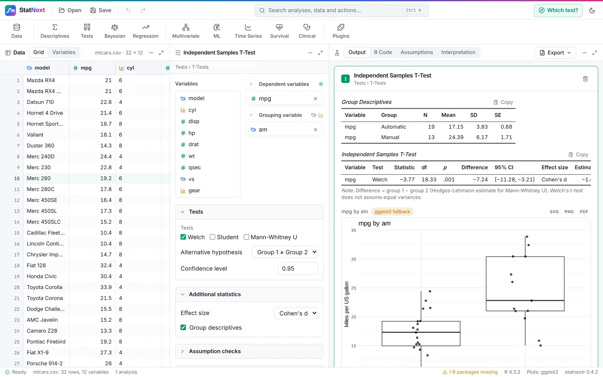
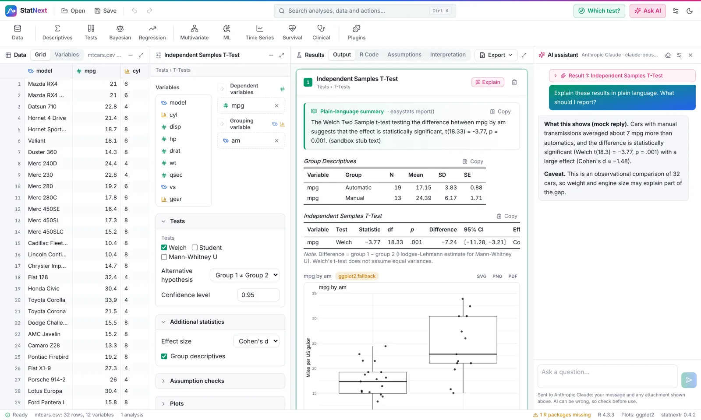
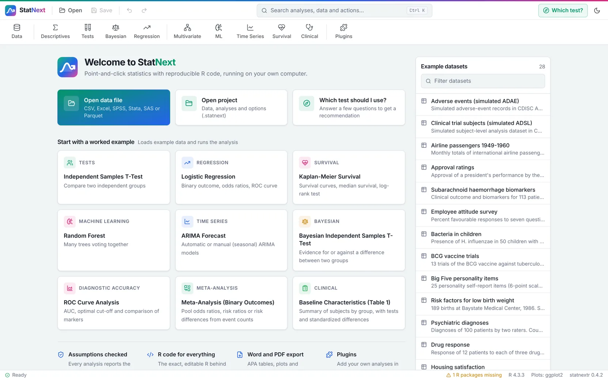
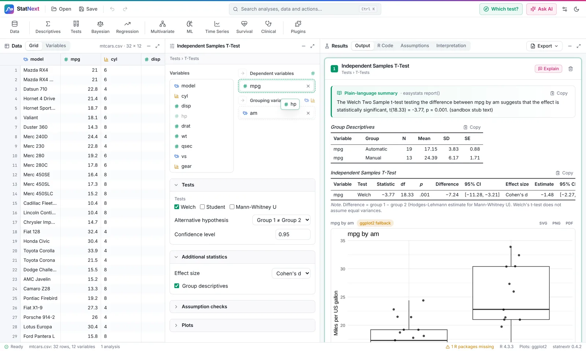
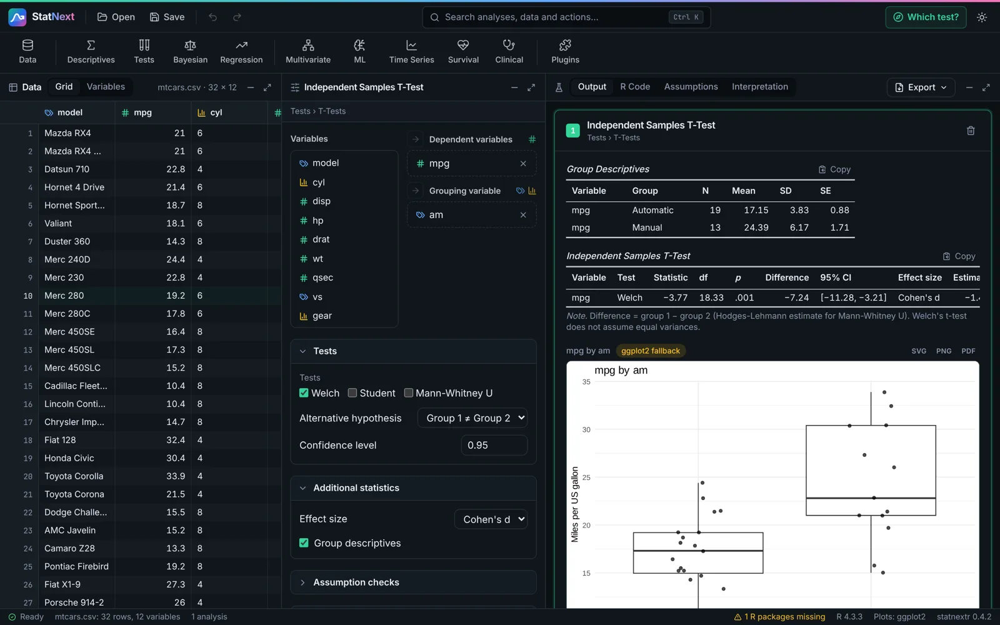
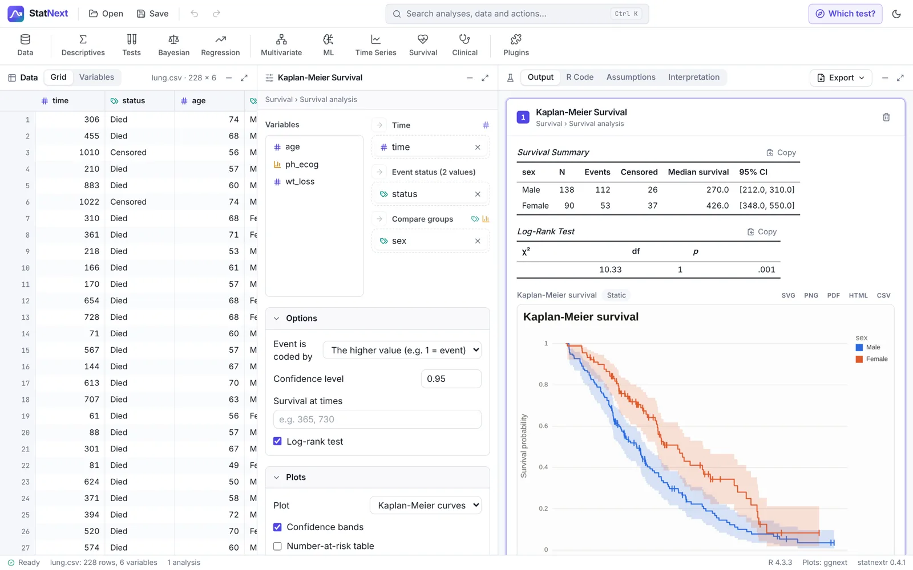
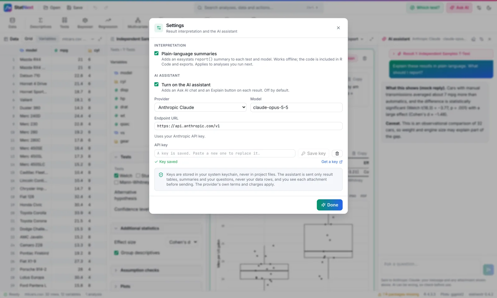

Point-and-click statistics,
with the R code behind every result
StatNext is a desktop statistics app for Windows, macOS and Linux. Pick an analysis, drop in your variables, and get publication-ready tables and plots, all computed by R on your own computer.
Windows 10/11 · macOS (Apple silicon and Intel) · Linux · needs R 4.4 or later

Easy as a menu, honest as a script
The comfort of SPSS-style menus, the transparency of R. Nothing is hidden: every number on screen can be reproduced from the code StatNext gives you.
Point-and-click analyses
More than 55 analyses in a labelled ribbon: t-tests, ANOVA, regression, mixed models, survival, multivariate, machine learning, time series, meta-analysis and Bayesian tests.
R code for every result
Each result has an R Code tab with the exact script that produced it. Edit and re-run it, or export the whole session as .R, .Rmd or .qmd.
ggnext plots
Clean, publication-ready plots from the ggnext R package, as static images or an interactive view, and saved as SVG, PNG or PDF.
Plain-language summaries
easystats report() writes a readable sentence under each test and model, worked out offline on your computer.
Optional AI assistant
Off by default. Bring your own key for Claude, OpenAI, Gemini, a compatible server or local Ollama. Only result tables are sent, never your data rows.
Drag and drop
Drag variables from the list into role boxes, or double-click them. Open CSV, Excel, SPSS, Stata, SAS and Parquet files.
“Which test should I use?”
Answer a few plain questions, or pick your variables, and the guide suggests the analysis and opens it ready to run.
Reports to Word, PDF, HTML
APA-style tables, assumption checks and interpretation. Export all results in one click.
Private by design
Your data stays on your computer. Analyses run in your own R installation with no account or cloud service.
Click, then keep the code
StatNext writes ordinary R. Copy it into RStudio, put it in a paper's supplement, or hand it to a reviewer. The results will match.
- Editable and re-runnable inside the app
- Whole session as an R script, R Markdown or Quarto file
- Projects saved as a single
.statnextfile
# Independent samples t-test: mpg by am library(effectsize) library(ggnext) d <- subset(data, !is.na(mpg) & !is.na(am)) d$am <- factor(d$am, labels = c("Automatic", "Manual")) fit <- t.test(mpg ~ am, data = d, var.equal = FALSE) es <- cohens_d(mpg ~ am, data = d, pooled_sd = FALSE) report::report(fit)
Plain language, and an assistant if you want one
Every test gets a written summary you can paste into a report. Turn on the AI assistant to ask follow-up questions or press Explain on any result.
- Your own API key, stored in the system keychain
- Review exactly what is sent before each message
- Works fully offline with Ollama

From descriptives to machine learning
Every analysis is a small, readable module. Add your own as a plugin in the same format.
A clean workspace, light or dark
Data, options and results side by side. Resize, maximize or minimize any pane.






Get StatNext
Free for everyone. Install R 4.4 or later first; on first launch StatNext installs the R packages it needs (3 to 10 minutes, needs internet).